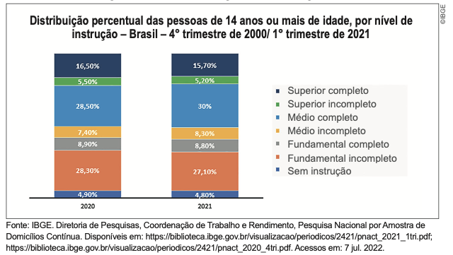

Capitulo 2
-Equações biquadradas e equações irracionais
116
Equações biquadradas
Observe a equação x4 - 13x2 + 36 = 0.
- Troque ideias com um colega e respondam:
- a) Qual é o grau dessa equação?
- b) O que vocês observam em relação aos expoentes da incógnita x?
Essa equação recebe um nome especial. Ela é denominada de equação biquadrada.
Vejamos como resolver equações deste tipo.
- x4 - 13x2 + 36 = 0
Para resolver equações biquadradas, devemos substituir x2 por y e x4 por y2, recaindo em uma equação do 2.º grau que já sabemos resolver.
y2 - 13y + 36 = 0
Δ = b2 - 4ac = 169 - 144 = 25
formula para o cesar
formula para o cesar
formula para o cesar
Agora, vamos determinar os valores de x, pois x2 = y.
- Para y = 9, temos:
x2 = 9
x = ±
raiz e 9 para o cesar colocar
x = ± 3
- Para y = 4, temos:
x2 = 4
x2 = 4
x = ± Raiz de 4 para o cesar
x = ± 2
Portanto, as raízes da equação são -3, -2, 2 e 3. Representamos o conjunto-solução por S = {-3, -2, 2, 3}.
117
Observe a resolução de outra equação biquadrada.
- x4 - 81x2 = 0
Vamos substituir x2 por y e x4 por y2, recaindo em uma equação do 2.º grau.
y2 - 81y = 0
y(y - 81) = 0
y’ = 0 ou
y - 81 = 0
y” = 81
Determinando os valores de x:
- Para y = 0, temos x = 0.
- Para y = 81, temos:
x2 = 81
x = ± 9
As raízes desta equação são 0, -9 e 9. O
conjunto-solução é dado por
S = {0, -9,
9}.
- Em seu caderno, resolva as equações biquadradas a seguir:
- a) x4 - 26x2 + 25 = 0
- b) x4- 49x2 = 0
- c) x4- 9x2 + 36 = 0
- d) 3x4- 10x2 - 8 = 0
- e) x4 + 16 = 169x2 + 16
- f) x4 + 4x2 + 8 = 0
Equações irracionais
Vamos resolver a equação x - 1 = raiz pro cesar
Note que nessa equação há uma incógnita no radicando. Equações deste tipo são denominadas equações irracionais.
Acompanhe agora como resolver equações irracionais.
- x - 1 = raiz pro cesar
Vamos elevar ao quadrado ambos os membros da equação.
(x - 1)2 = raiz pro cesar
118
Assim:
x2 - 2x + 1 = x + 11
x2 - 2x - x + 1 - 11 = 0
x2 - 3x - 10 = 0
Δ = b2 - 4ac = 9 + 40 = 49
fracoes pro cesar
Após encontrarmos as raízes, precisamos verificar se essas raízes satisfazem a equação irracional, pois nem sempre isso acontece.Verificação:
para x = 5, temos:
x - 1 = raiz pro cesar
5 - 1 = raiz pro cesar
4 = raiz pro cesar
4 = 4 (verdadeira)
para x = -2, temos:
x - 1 = raiz pro cesar
-2 - 1 = raiz pro cesar
- 3 = raiz pro cesar
- 3 = 3 (falsa)
Veja que -2 não verifica a igualdade para a equação, nesse caso somente 5 é a raiz da equação irracional x - 1 = raiz pro cesar Seu conjunto-solução é dado por S = {5}.
Vejamos a resolução de outras equações irracionais:
Vamos elevar ao quadrado ambos os membros da equação.
raiz pro cesar
Assim:
x + 12 = 9
x + 9 = 12
x = -3
S = {-3}
Verificação
raizes pro césar
3 = 3 (verdadeira)
119
Vamos elevar ao quadrado ambos os membros da equação.
raiz pro cesar
Assim:
2x - 6 = x - 2
2x - x = - 2 + 6
x = 4
S = {4}
Verificação:
raiz pro césar
Encontre Soluções- 2. (UTFPR) O conjunto-solução S da equação raiz pro césar, é:
- a) S = { 6 }.
- b) S = { 1, 6 }.
- c) S = { 3 }.
- d) S = Ø.
- e) S = { 4 }.
Probabilidade e estatística
- Unidades de medida utilizadas na informática
120
Em uma pesquisa censitária, investigamos todos os indivíduos (pessoas, peixes, plan- tas, etc.) de uma população de interesse (total de peixes, população de um país, bioma, etc.). Nas pesquisas amostrais, apenas uma parte da população de interesse é investigada, ou seja, a amostra é um subconjunto. Há necessidade de que a mostra escolhida seja bem definida para possa representar o que ocorre com a população, por isso ela é tão importante. No Brasil, são feitas pesquisas contínuas para se entender o cenário nacional. A PNAD é o programa de pesquisa sobre a população brasileira utilizado pelo IBGE.
A Pesquisa Nacional por Amostra de Domicílios Contínua (PNAD Contínua) é uma pesquisa por amostra probabilística de domicílios, de abrangência nacional, planejada para atender a diversos propósitos. Visa acompanhar as flutuações trimestrais e a evolução, no curto, médio e longo prazo, da força de trabalho e outras informações necessárias para o estudo do desenvolvimento socioeconômico do país. Para atender a tais objetivos, a pesquisa foi planejada para produzir indicadores trimestrais sobre a força de trabalho e indicadores anuais sobre temas suplementares permanentes (como trabalho e outras formas de trabalho, cuidados de pessoas e afazeres domésticos, tecnologia da informação e da comunicação, etc.), investigados em um trimestre específico ou aplicados em uma parte da amostra a cada trimestre e acumulados para gerar resultados anuais, sendo produzidos, também, com periodicidade variável, indicadores sobre outros temas suplementares. Tem como unidade de investigação o domicílio.
A PNAD Contínua foi implantada, experimentalmente, em outubro de 2011 e, a partir de janeiro de 2012, em caráter definitivo, em todo o Território Nacional. Sua amostra foi planejada de modo a produzir resultados para o Brasil, Grandes Regiões, Unidades da Federação, Regiões Metropolitanas que contêm Municípios das Capitais, Região Integrada de Desenvolvimento (RIDE) Grande Teresina, e Municípios das Capitais. Desde sua implantação, a pesquisa, gradualmente, vem ampliando os indicadores investigados e divulgados.
Periodicidade de divulgação das informações:
- Mensal — conjunto restrito de indicadores relacionados à força de trabalho e somente para o nível geográfico de Brasil;
- Trimestral — conjunto de indicadores relacionados à força de trabalho para todos os níveis de divulgação da pesquisa;
- Anual — demais temas permanentes da pesquisa e indicadores complementares à força de trabalho;
- Variável — outros temas ou tópicos dos temas permanentes a serem pesquisados com maior periodicidade ou ocasionalmente.
Os indicadores mensais utilizam as informações dos últimos três meses consecutivos da pesquisa, existindo, entre um trimestre móvel e o seguinte, repetição das informações de dois meses. Assim, os indicadores da PNAD Contínua produzidos mensalmente não refletem a situação de cada mês, mas, sim, a situação do trimestre móvel que finaliza a cada mês.
Os resultados anuais sobre outros temas ou tópicos são obtidos acumulando-se informações de determinada visita ao longo do ano, ou são concentrados em determinado trimestre.
Fonte: IBGE. Pesquisa Nacional por Amostra de Domicílios Contínua. Disponível em: https://www.ibge.gov.br/estatisticas/sociais/habitacao/17270-pnad-continua.html. Acesso em: 03 jun. 2022.
121
- Reúna-se com seu colega e observem o gráfico, a seguir: 
Agora, respondam em seus cadernos:
- a) De acordo com o gráfico, a quantidade de pessoas sem instrução aumentou ou diminuiu?
- b) Na opinião de vocês, qual é a importância do aumento de anos de estudo para a vida de uma pessoa?
- c) Observando o gráfico, quais são os níveis de instrução que diminuíram em 2021 ao comparar com 2020?
- d) Na opinião de vocês, essa pesquisa foi realizada com uma amostra ou com a população do fenômeno que está sendo estudado?
- e) Qual outro tipo de gráfico você usaria para representar essas informações. Reproduza-o em seu caderno.
- (Caxias do Sul-RS) Se uma das raízes da equação 2x2 - 3px + 40 = 0 é 8, então o valor
de p é:
a) 5
b)
c) 7
d) -5
e) -7
- (UFAM) Quais os valores de b e c para que
a equação x2 + bx + c = 0 tenha como raízes
5 e -3?
- a) -2 e -15
- b) 5 e -3
- c) 15 e 3
- d) -5 e 3
- e) n.d.a.
- (FUVEST-SP) A equação ax2 - 4x - 16 =
0 tem uma raiz cujo valor é 4. A outra raiz é:
- a) 1
- b) 2
- c) -1
- d) -2
- e) n.d.a.
-
4. (FGV-SP) Com relação à equação FORMULA DO CESAR, podemos
afirmar que o conjunto-solução é:
a) {3, - 1}
b) {-3} e)

c) {-1, 3}
d) {1}
e) Ø
122
Determine a largura da calçada, sabendo que a área total, ou seja, a área ocupada pela piscina mais a área ocupada pela calçada, será igual a 288 m2.
- 6. (Santa Maria-RS) A soma e o produto das raízes da equação 2x2 - 7x
+
6 = 0, respectivamente, são:
- a) -7 e 6
- b) - e 3
- c) e 3
- d) e 3
- e) 7 e -6
- 7. (CESCEM-SP) O produto das raízes da equação Formula Cesar é:
- a) 6
- b) 5
- c) 1
- d) -1
- e) -6
- 8. (FGV-SP) A equação Formula Cesar tem:
- a) uma única raiz;
- b) infinitas raízes;
- c) exatamente duas raízes;
- d) conjunto-solução vazio.
- 9. (FAAP-SP) O conjunto-solução da equação q4 - 13q2 +
36 = 0 é:
- a) {2, 3}
- b) {0, 2, 3}
- c) {-3, -2}
- d) {-3, -2, 2, 3}
- e) n.d.a.
- 10. (PUC-SP) A solução da equação equacao para o cesar é:
- a) 1
- b) 2
- c) 3
- d) 7
- e) n.d.a.
- 11. Em seu caderno, resolva as equações a seguir.
- a) equacao para o césar ,
sendo x ≠ -1 - b) equacao para o césar ,
sendo y ≠ 1 e y ≠ -1 - c) equacao para o césar ,
sendo m ≠ 2 - d) equacao para o césar ,
sendo x ≠ 1 e x ≠ -1
- a) equacao para o césar ,
123
- a) 2 e 8
- b) -2 e -8
- c) 5 e -5
- d) -16 e -4
- a) 2
- b) 3
- c) 4
- d) 5
- e) 11
- a) e 1
- b) e
- c) - e -
- d) - e
- e) e -
- a) equacao para o césar
- b) equacao para o césar
- a) múltiplo de 5;
- b) divisor de 2;
- c) múltiplo de 3;
- d) primo;
- e) múltiplo de 12.
x2 + 12x + 35 = 0?
- a) 7 e 5
- b) -7 e 5
- c) 7 e -5
- d) -5 e -7
- a) x4 - 144 = 0
- b) x4 - 64x2 = 0
- c) x4 - 26x2 + 25 = 0
Sabendo que a área dessa sala é 12 m2, o valor de x será:
- a) 0,5 m
- b) 0,75 m
- c) 0,80 m
- d) 0,05 m
- 20. (UFRR) A equação do 2.º grau que tem como uma das raízes RAIZ PARA O
CÉSAR
e o produto
igual a 1 é:
- a) x2 - x + 4 = 0
- b) x2 + 4x + 1 = 0
- c) x2 - 4x - 1 = 0
- d) x2 + 4x - 1 = 0
- e) x2 - 4x + 1 = 0